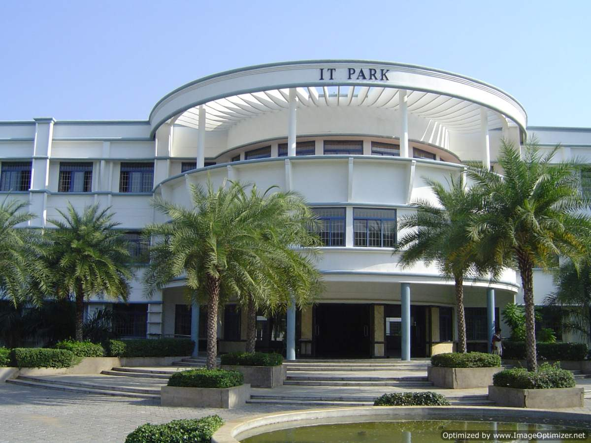
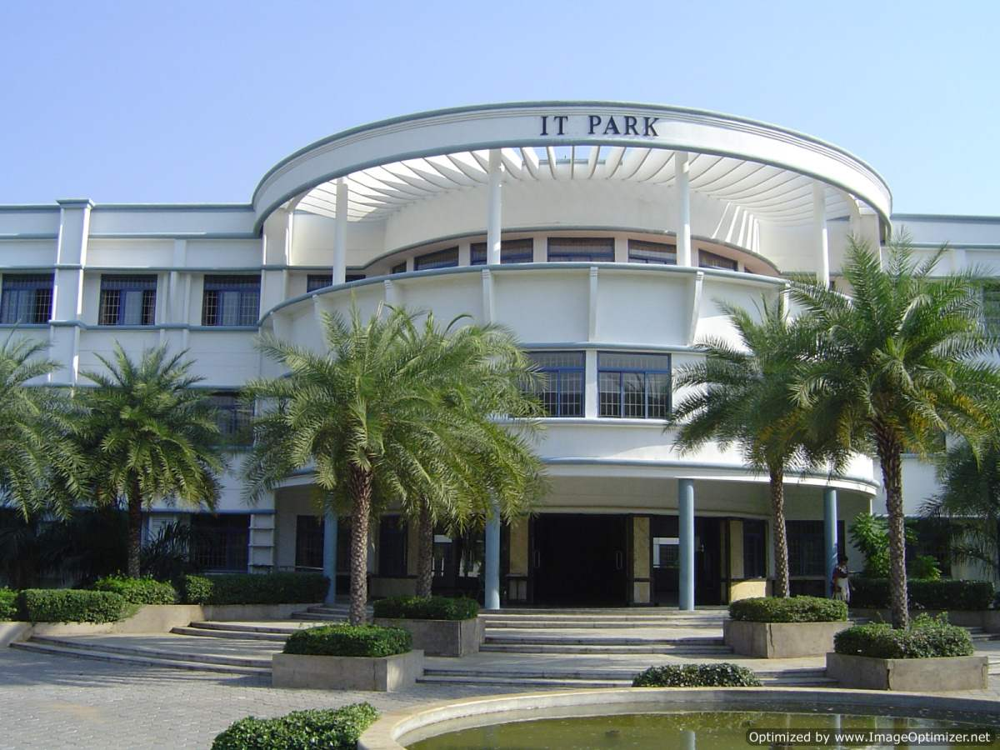
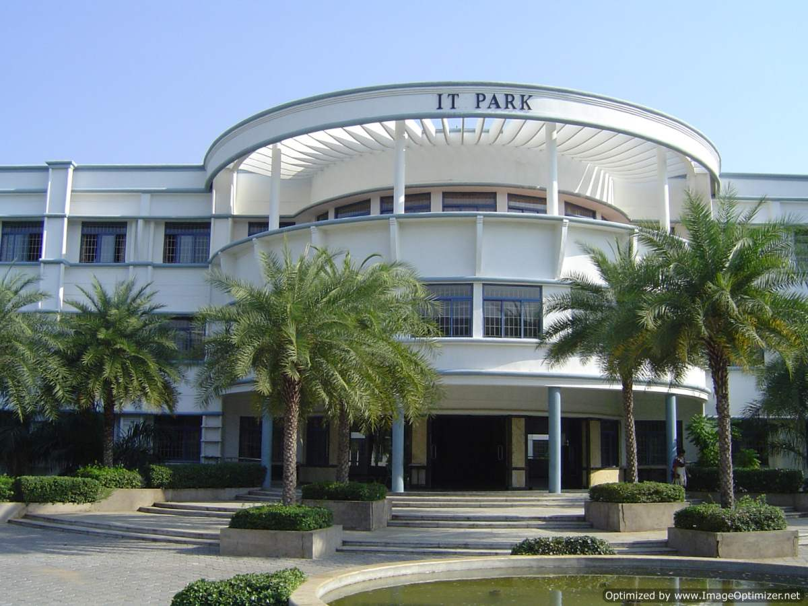

In 2003 the Technology Business Incubator at Kongu Engineering College won the National Award for Technology Business Incubators, an award given by the Department of Science and Technology's National Science & Technology Entrepreneurship Development Board.
